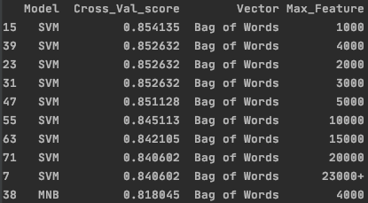

Introduction
The aim of the project is to investigate the process of classifying web pages by applying data classification techniques for automatic categorization. This would help in filtering out the responses of a search engine or ranking web pages according to their relevance to a topic specified by the user.
Usually, some of the pages returned are not tagged with category topics. This is where classification techniques come into play. By using the collection of pages available under each topic as examples, we can create category descriptions. Then using these descriptions, we can classify new web pages to one of the existing topics. Another approach by using some metric over text documents, this could help to find the closest document and assign its category to the new web page.
We treated this webpage classification as a problem in supervised learning. A training data set is not available, so we collected some data by searching random words on yahoo answers. We chose to use yahoo answers to collect data as each question on the website is already categorized. This allows us to have an accurate data set and allows us to train and test our model with ease.
Project Description
We decided to write a Web Crawler in Python using Jupyter Notebook. Since we used Yahoo Answers, the web pages were already categorized so we chose to use some of the categories on the yahoo answers website. We also chose to combine categories that we felt were alike like “Dining Out” and “Food & Drink”. We also removed some categories like “Yahoo Products” as we felt it was too specific of a topic and did not apply to the majority of the web. We used yahoo answers as it had a wide range of topics which are at different levels. We have 21 topics in total and each topic has a minimum 10 documents and each document has at least 100 words.
Topic List:
- Arts & Humanities
- Social Science
- Cars & Transportation
- Entertainment & Music
- Consumer Electronics
- Family & Relationships
- Society & Culture
- Pets
- Health
- Sports
- Home & Garden
- Education & Reference
- Beauty & Style
- Pregnancy & Parenting
- Environment
- Business & Finance
- Science & Mathematics
- Politics & Government
- Travel
- Games & Recreation
- Food & Drink
We decided to use TFIDF and Bag of Word for Feature extraction and chose to use Support Vector Machine as our supervised learning approach. Training Set is 90%; Test set is 10% of data; Used python function to distribute data at random.
Experimental Analysis
Looking at some of the data, we can see a lot of random and unrecognizable characters with little to no meaning and no significance to our algorithm. We also noticed there are not a lot of bi-grams that could be significant to our model. This was a sign that using character and bi-gram level features would not be important. This left us with using just word level features, we proceeded by using the term frequency - inverse document frequency (TFIDF) features and the Count (bag of word) features. Another key component to our model is the amount of features it uses. Our feature selection process is very important because using too many features can cause overfitting and using too little will cause the model to be too simple which will affect its abilities. Our feature extraction used 23273 features as a default. Our feature selection process compared 1000, 2000, 3000, 4000, 5000, 10000,15000 and 20000 amounts of features. It is also more time/space consuming when our model has a lot of unnecessary features. The last component to our model is the classification algorithm. We compared the Naive Bayes, K-Nearest Neighbors using both euclidean and cosine similarity and the Support Vector Machine (SVM) algorithms. The Naive Bayes classification algorithm uses the Naive Bayes theorem in its application, it is a probabilistic classification algorithm. The SVM uses a geometric approach to classification, it uses a hyperplane to determine the classification. The KNN algorithms use a non parametric approach to classify the documents. Finally, to select our model, maximum amount of features and feature extraction, we used the 5-folds cross validation. We created combinations of the considered amount of features, feature extraction and model, then selected the combinations with the 10 highest cross validation scores.

From the Graphs, we can see that using the SVM model and the Bag of Words vector feature extraction our model has its best cross validation score at around 1000 maximum features. The model having 1000 features prevents the model from being over complicated and has enough features to not be over simplified. The model not being over complicated or oversimplified prevents the model from being over or under fitted. We can also see that the Naive Bayes, KNN-C and KNN-M all do significantly better when using Bag of words rather than TF IDF. Whereas the SVM does much better than all the other vector types in TF IDF and slightly better than MNB in Bag of Words. Both K-Nearest Neighbours performances are below par. The components that produce the best results are the Support Vector Machine algorithm and the Count vectorizer with at most 1000 features as produced in the chart. The exact numbers of the cross-validation results of the Support Vector Machine and the Count vectorizer can be seen in the table above. This seems like a reasonable model as the amount of features is much less than the default and its accuracy is very high so we have chosen to select this model as our final model.

The graph above shows the learning curve of the model we selected. Our model is slightly over fitted because the training score is a bit higher than validation score ((3.5. Validation curves: plotting scores to evaluate models — scikit-learn 0.23.1 documentation, 2020)). However, training it with more data points would reduce the overfitting. When looking at the metrics, the model produces a 91% accuracy score, 93% precision score, and 91% recall score. Meaning we get 91% of our predictions correct, and 93% of our predictions are positive.